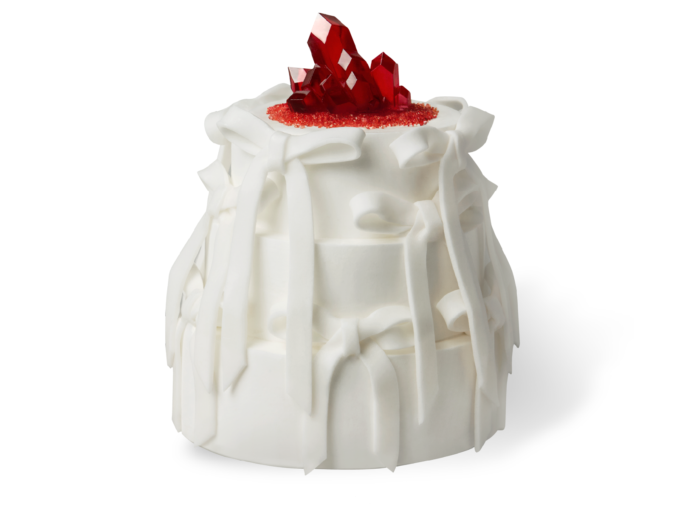
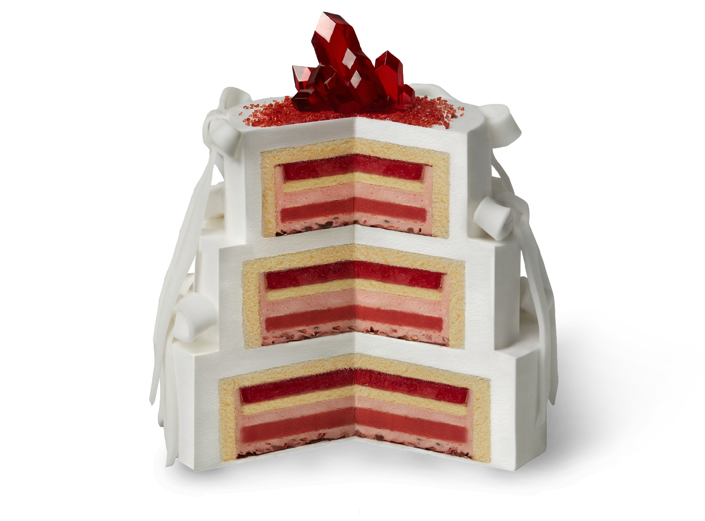
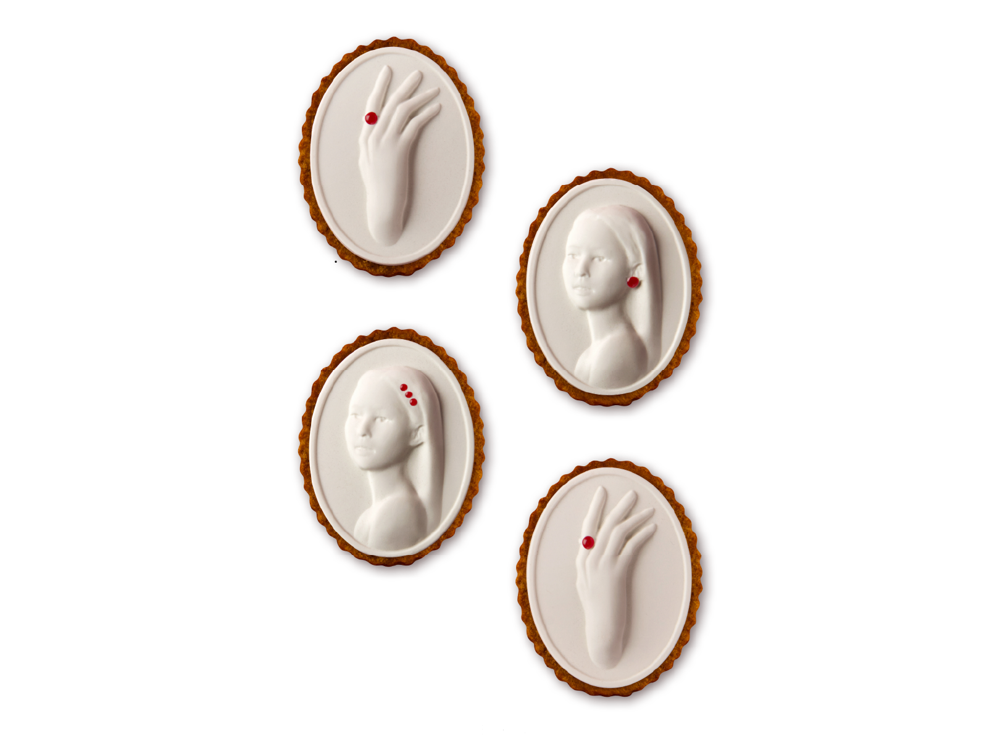
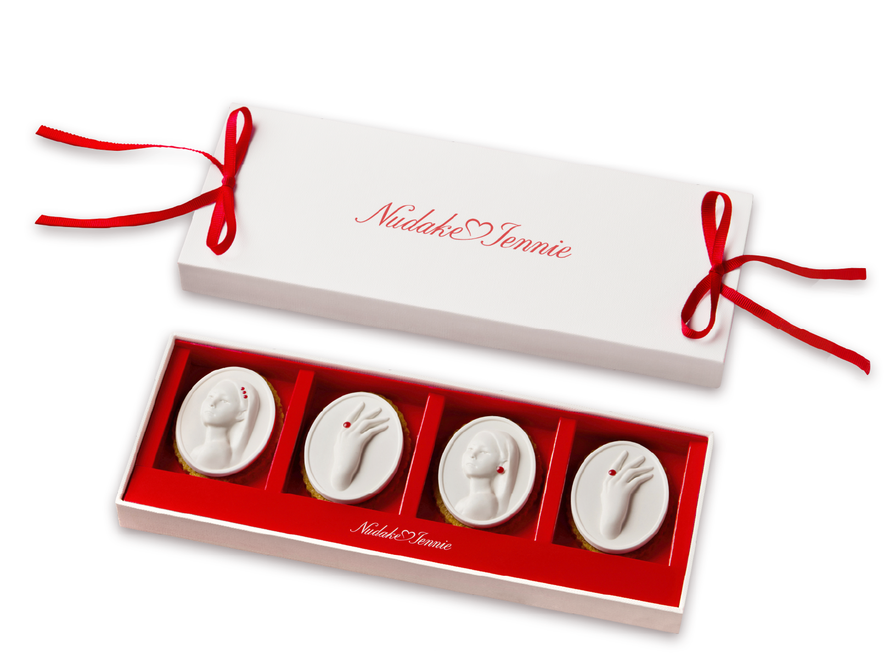
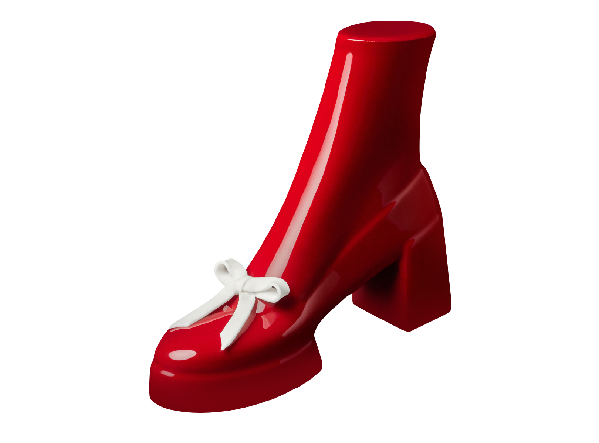
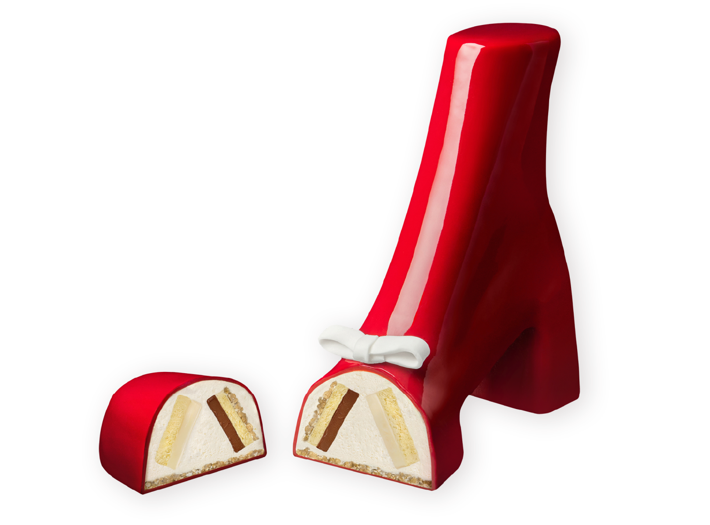
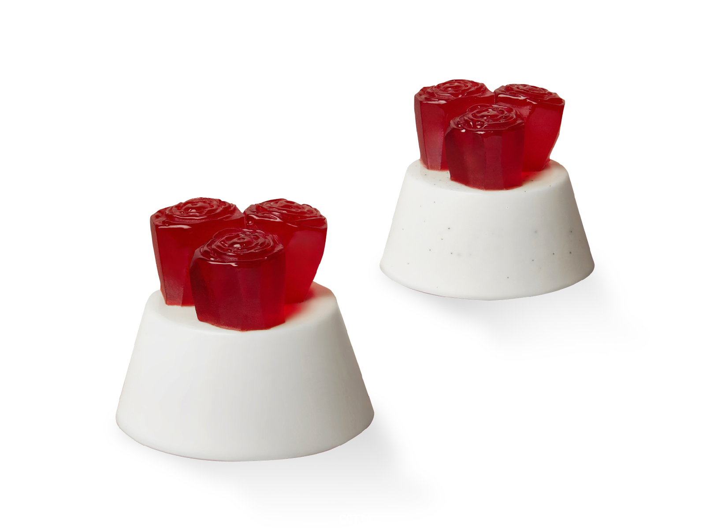
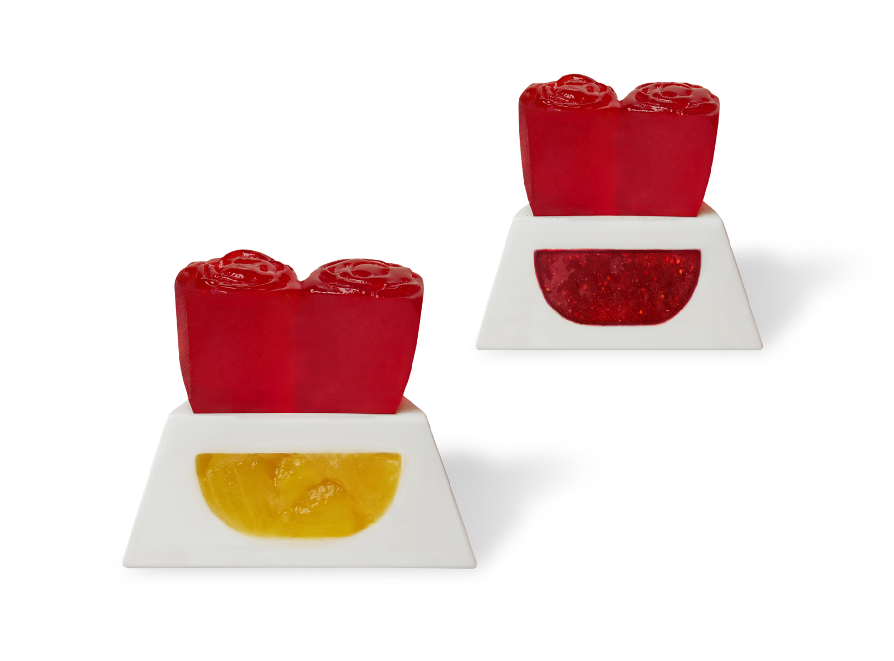

'Nudake♡Jennie' is a special collaboration pop-up store presented by
Nudake and Jennie.
From four desserts celebrating Jennie's first solo album to a space that
captures her
various charms, visitors can experience new moments throughout the
pop-up store.
Introducing four desserts created to embody Jennie's creativity.
The four special desserts are: "Jennierubyjane," delicately finished
with ribbon
and ruby decorations; "Cameo," which features her intricately carved
portrait;
"Rouge Heel," a charming shoe-shaped creation; and "Cotta," offering
the experience of two panna cotta flavors.








Jennie’s first solo album will feature seven themes expressed through a
vibrant
spectrum of colors, with key highlights of the album waiting to
be explored
at the ‘Nudake♡Jennie’ pop-up store. At the center of the
Jennie’s many facets.
Each tier of the cake is elaborately carved to
reflect elements of Jennie’s album,
while the cushioned sections are
designed for seating, providing
an interactive experience.